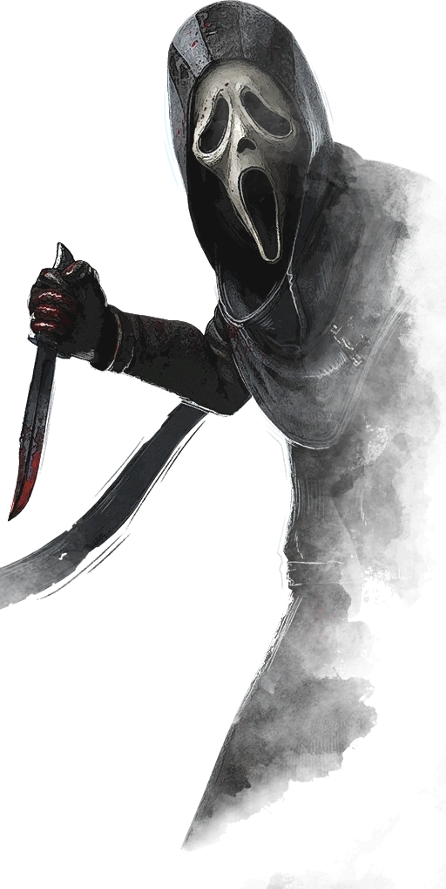
Un asesino espeluznante capaz de acechar a sus víctimas y acercarse sigilosamente usando su poder, Velo de la noche. Los supervivientes afectados se encontrarán desprotegidos al no percatarse de su presencia, por lo que deberán usar su percepción del entorno para poder sobrevivir.
Sus habilidades personales, Soy Todo Oídos, Temblores Trepidantes y Persecución Furtiva, le permiten localizar a supervivientes, defender generadores y ser impredecible durante las persecuciones.
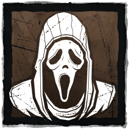
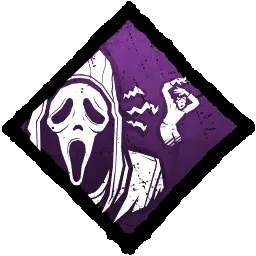
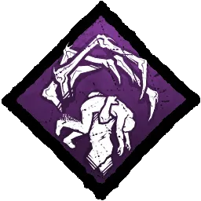
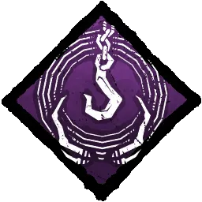
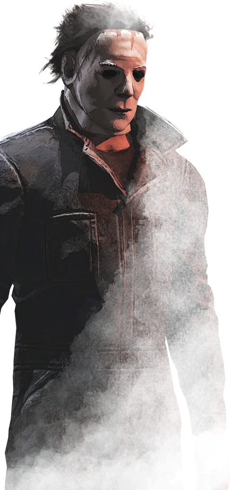
La Forma es un Asesino inquietante que se dedica a acechar a los supervivientes a cierta distancia para alimentar su poder, Mal interior. Cuanto más tiempo está al acecho, más fuerte y rápido se vuelve.
Sus habilidades personales Lo Mejor para el Final, Jugar con la Comida y Luz que Agoniza le confieren la capacidad de elegir como obsesión a un superviviente y desencadenar efectos letales a partir de ella.
Sus habilidades se centran en las Obsesiones, ya que Michael Myers está obsesionado con asesinar. El asesino elige un Superviviente y lo etiqueta como su Obsesión.
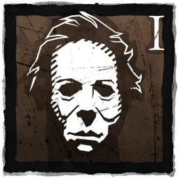
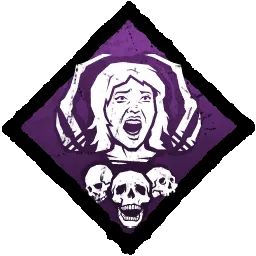
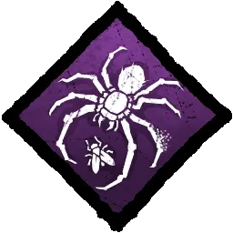
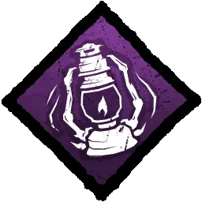
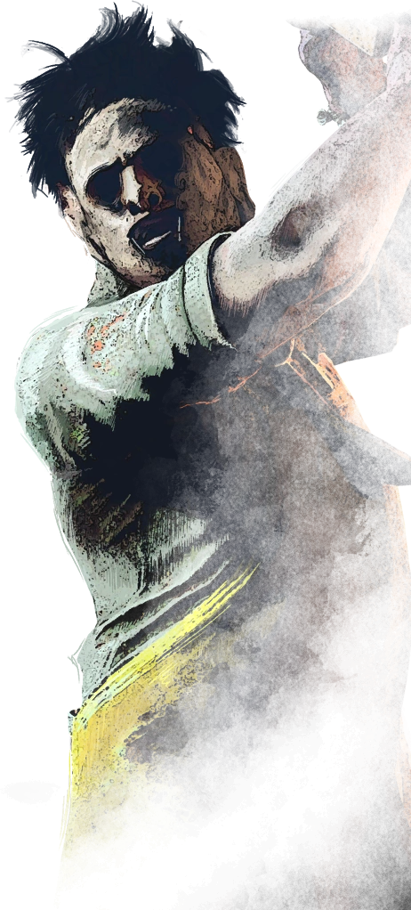
El Caníbal, también conocido como Bubba, es un asesino brutal que utiliza su Motosierra de Bubba para infligir daño masivo y atacar a múltiples supervivientes a la vez. Su estilo de juego agresivo lo convierte en una amenaza constante, especialmente en espacios cerrados donde puede maximizar su daño.
Sus habilidades personales Knock Out, Barbacoa y Chile y Muerte de Franklin están diseñadas para obstaculizar la cooperación entre supervivientes y rastrear con eficacia a nuevas víctimas tras colgar a una.
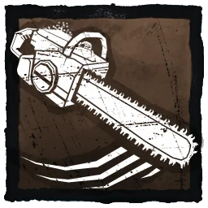
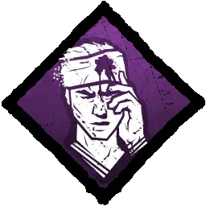
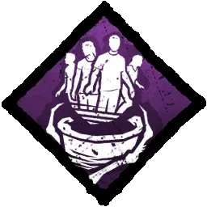
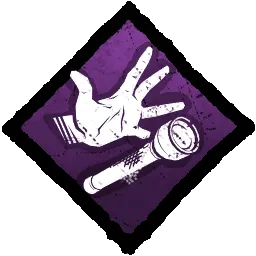
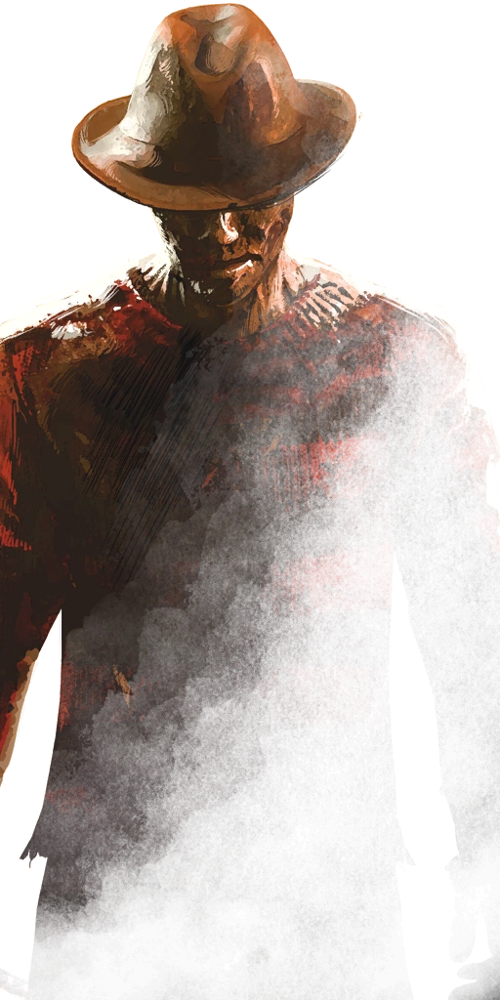
La Pesadilla es un asesino de pesadilla que puede arrastrar a los Supervivientes al Mundo de los Sueños mediante su poder, Demonio de los Sueños, para limitar sus capacidades y destrozarlos.
Sus habilidades personales, Enfurecimiento, Recuérdame y Guardián de Sangre, mejoran progresivamente sus capacidades y lo vuelven más fuerte a medida que la partida se acerca a su clímax. Sus habilidades impiden que los supervivientes escapen. Hará sufrir a todos los supervivientes, y arreglárselas para escapar del "Terreno de caza" no será sencillo.
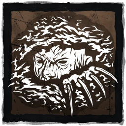
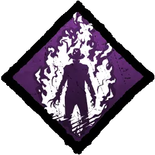
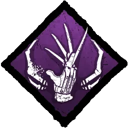
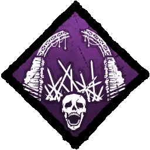
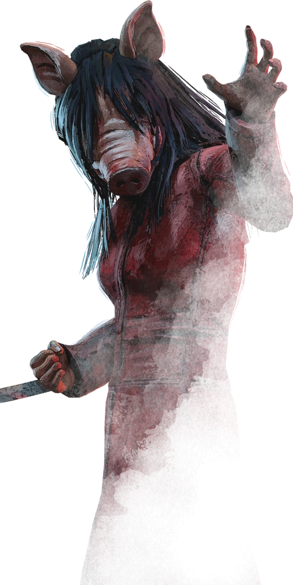
La Cerda es una asesina aterradora, capaz de agacharse en modo sigiloso y luego emboscar a los supervivientes desde una corta distancia. También puede aplicar trampas para oso invertidas a los Supervivientes caídos, forzándolos a eliminarlas antes de que se acabe el tiempo, provocando una muerte instantánea.
Sus habilidades personales, Gancho Torturador: Truco del Verdugo, Supervisión y Toma una Decisión, le dan más control de mapa y exponen a supervivientes altruistas.
El objetivo de sus habilidades es el dolor y la tortura. No es tan fácil huir de un gancho y todos los supervivientes serán evaluados seriamente cuando se trata de controles de habilidad.
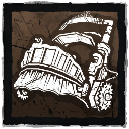
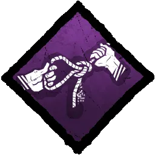
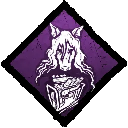
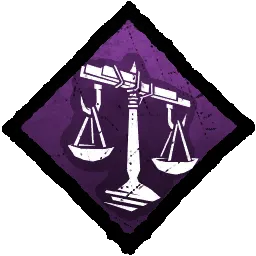
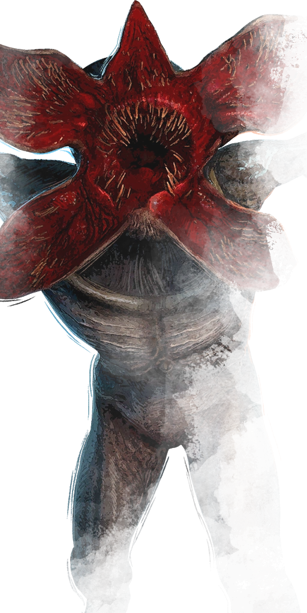
El Demogorgon es un asesino no identificado, capaz de abrir múltiples portales y atravesarlos para cubrir grandes distancias. Usando su poder, Desde el Abismo, puede detectar a cualquier Superviviente que se encuentre cerca de los Portales y luego desatar un ataque de salto para infligir daño a distancia.
Sus habilidades personales, Sobretensión, Quebrantamentes y Restricción Cruel, afectan el entorno cercano a los generadores y afectan a los supervivientes de maneras inesperadas.
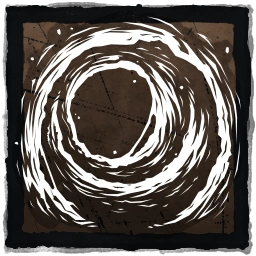
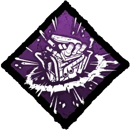
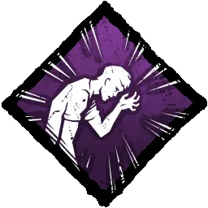
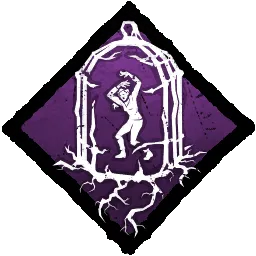
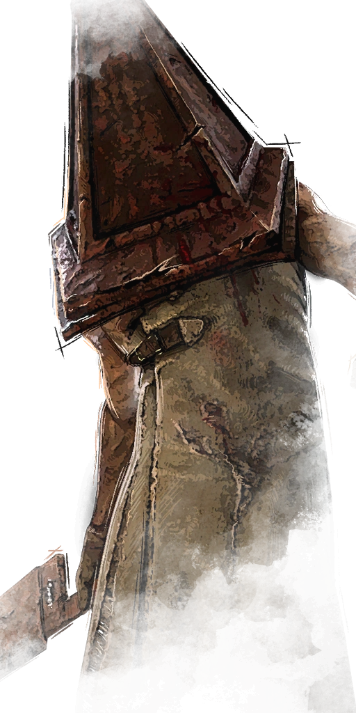
El Verdugo es un asesino capaz de manipular el mapa para atormentar a los Supervivientes con los obstáculos que crea. Los Supervivientes afectados serán vulnerables a su Gancho especial, la Jaula de Expiación, y a su mori único, Sentencia Definitiva.
Sus habilidades personales, Imposición de Penitencia, Rastro de Tormento y Vínculo Mortal, le permiten perseguir a su presa de forma agresiva mientras engaña y localiza a los supervivientes.
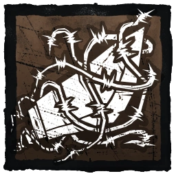
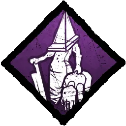
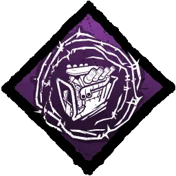
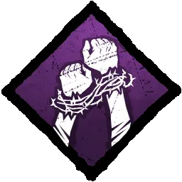
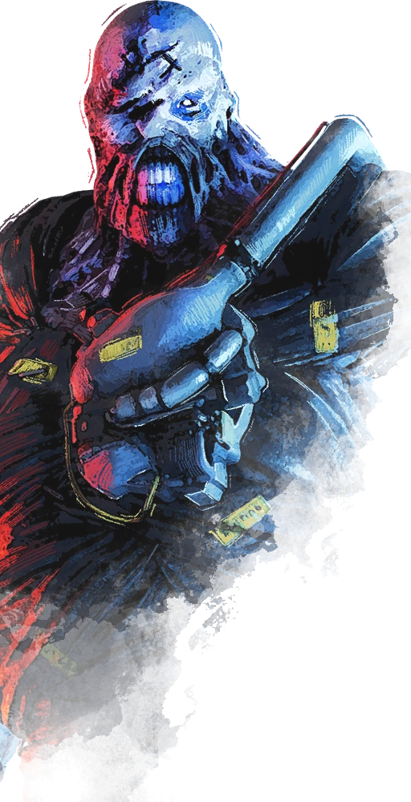
Un asesino imparable, capaz de atacar con su tentáculo a media distancia, mientras recibe apoyo de los zombis que deambulan por el área.
Sus ventajas personales, Perseguidor Letal, Histeria y Erupción, le permiten emboscar a los sobrevivientes con rapidez, mientras siembra confusión y miedo al herirlos y colgarlos en los ganchos.
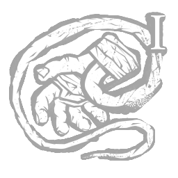
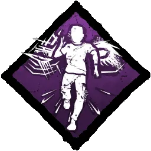
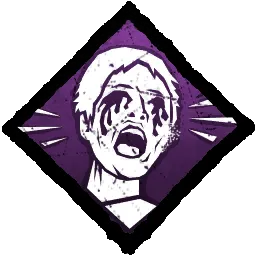
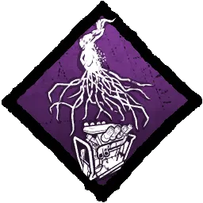
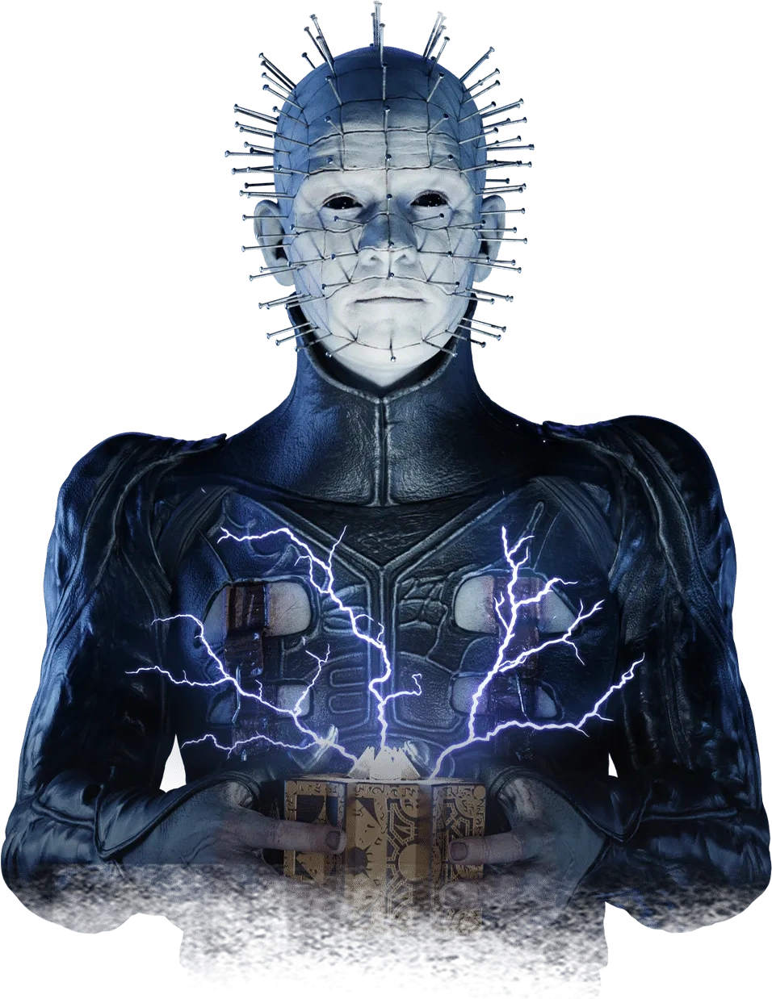
Un asesino invocador capaz de poseer cadenas y convertirlas en proyectiles y usar la Configuración de los Lamentos para torturar a todos los sobrevivientes al mismo tiempo.
Sus ventajas personales, Candado, Maleficio: Juguete y Gancho Flagelante: Obsequio de Dolor, le permiten ralentizar el progreso de los generadores y continuar atormentando a los sobrevivientes que ya experimentaron su dulce sufrimiento.
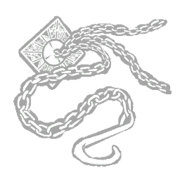
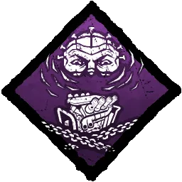
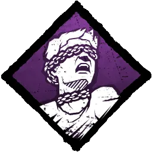
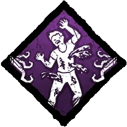
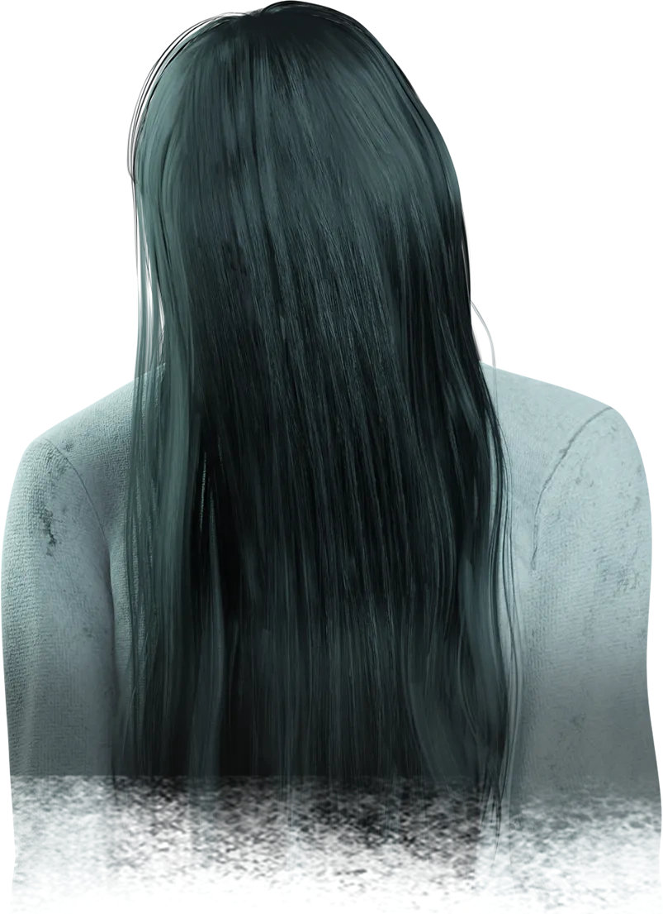
La Onryō, una vengativa fantasma imbuida con el poder Nensha, es capaz de atravesar el reino de forma silenciosa e invisible, y se manifiesta una vez lista para atacar.
Sus ventajas personales, Gancho Flagelante: Torrente de Ira, Salmuera y Tormenta Despiadada le permiten revelar a los sobrevivientes escondidos, vigilar los generadores e impedir el progreso de reparación.
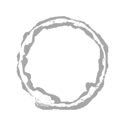
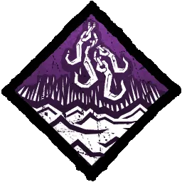
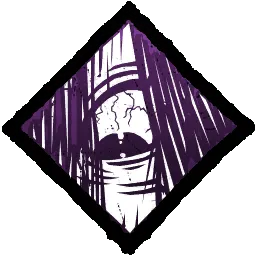
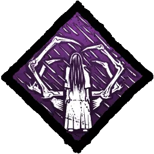
Albert Wesker es una mente maestra brillante y despiadada dotada del poder de Uroboros.
Sus ventajas personales, Anatomía Superior, Conciencia de Estar Despiertos y Terminal, te permiten saltar más rápido, ver las auras de otros sobrevivientes mientras llevas uno, y hacer que los sobrevivientes sufran Desesperanza permanente cuando las puertas de salida se activan.
Adhesión Virulenta
El Cerebro puede avanzar a toda velocidad, infectando a los sobrevivientes con el virus Uroboros o saltando sobre los obstáculos.
Mantén presionado el botón de poder para cargar un ataque de golpe. Mientras carga, El Cerebro se mueve un poco más lento mientras prepara su ataque. Cuando esté cargado, presiona el botón de ataque para golpear. Si El Cerebro golpea a un o una sobreviviente, lo o la infecta (o aumenta su infección). Si El Cerebro choca contra algo durante este golpe, azotará al sobreviviente, causándole daño; de lo contrario, el sobreviviente es arrojado y este pierde un estado de salud si es arrojado contra algún objeto sólido. Si Adhesión Virulenta impacta contra una tarima o una ubicación de salto, El Cerebro salta sobre el obstáculo.
EFECTO ESPECIAL: INFECCIÓN DE UROBOROS
Al ser alcanzados por Adhesión Virulenta, los sobrevivientes quedan infectados. La infección aumenta con el tiempo, y cuando está completamente infectado, el sobreviviente sufre el efecto Entorpecimiento. Si una Adhesión Virulenta agarra y azota a un sobreviviente y éste está totalmente infectado, El Cerebro lo llevará automáticamente.
INTERACCIÓN ESPECIAL: AEROSOL DE PRIMEROS AUXILIOS
Al comienzo de cada prueba, aparecen varias cajas de suministros. Cada uno contiene un aerosol de primeros auxilios. Cuando está infectado, un sobreviviente puede usar el aerosol de primeros auxilios en sí mismo o en otro, eliminando la infección. Cada aerosol de primeros auxilios tiene una cantidad determinada de usos. Después de usar un aerosol de primeros auxilios, Instinto Asesino revela brevemente la ubicación del sobreviviente.
El Xenomorfo, un espécimen implacable de un planeta lejano, es violento, ágil y astuto.
Sus ventajas personales, Arma Definitiva, Brutalidad Veloz e Instinto Alienígena, le permiten hacer gritar a los sobrevivientes cercanos, obtener Celeridad después de realizar ataques básicos y ver las auras de los sobrevivientes lejanos.
Persecución Oculta
En respuesta a una supuesta señal de socorro, la tripulación de la Nostromo aterrizó en LV-426. Lo que hallaron ahí se convirtió en uno de los mayores horrores de la humanidad.
Cuando el Xenomorfo está en una partida, una serie de túneles quedan a su disposición. Al acceder a un puesto de control, puede entrar en estos túneles para moverse rápidamente por el mapa, detectar la presencia de supervivientes cercanos y acelerar el tiempo de recuperación de su modo rastreador. Salir de un puesto de control desactiva momentáneamente las torretas desplegadas y marca a los sobrevivientes cercanos con Instinto asesino.
HABILIDAD ESPECIAL: MODO RASTREADOR
El Xenomorfo entra en modo rastreador automáticamente cuando no está en tiempo de recuperación. En modo rastreador, el Xenomorfo camina sobre cuatro patas y se vuelve más sigiloso, reduciendo así su radio de terror. En modo rastreador, el Xenomorfo también dispone de un violento ataque de cola.
CARACTERÍSTICA ESPECIAL DEL MAPA: ESTACIONES DE CONTROL
Hay siete estaciones de control repartidas por el mapa. Los sobrevivientes pueden interactuar con estas estaciones para conseguir una torreta lanzallamas remota, mientras que el Xenomorfo puede entrar y salir de los túneles situados bajo dichas estaciones.
OBJETO ESPECIAL: TORRETA LANZALLAMAS REMOTA
Se pueden colocar torretas en el mapa para hacer frente al Xenomorfo. Cuando el Xenomorfo entra en el radio y en la línea de visión de una torreta, esta ataca. El ataque hace que el Xenomorfo se tambalee y puede hacer que finalice el modo rastreador. Si una torreta consigue sacar al Xenomorfo del modo rastreador o dispara durante demasiado tiempo, se sobrecalienta y debe ser reparada por un o una sobreviviente. El Xenomorfo puede atacar a las torretas para destruirlas. Llevar una torreta te hace inmune a que te detecten mientras el asesino está en el túnel.
El Chico Bueno es un asesino escurridizo, capaz de engañar a los sobrevivientes con sus pisadas ilusorias y su letal ataque Cortar y Picar.
Sus ventajas personales, Maleficio: Dos Pueden Jugar, Amigos Hasta el Fin y Baterías Incluidas, le permiten cegar a quienes lo ciegan, cazar implacablemente a su obsesión y llegar más rápido a los generadores completados.
Cortar y Picar
Tras calmar su enojo por estar atrapado en el cuerpo de un muñeco, el Estrangulador de Lakeshore se dio cuenta de que este nuevo cuerpo era el anfitrión perfecto para desorientar y sorprender a sus víctimas.
HABILIDAD ESPECIAL: MODO ESCONDIDAS
Chucky puede entrar en modo escondidas en cualquier momento, siempre y cuando el tiempo de recuperación haya terminado. Cuando está en modo escondidas, se vuelve Indetectable y genera pisadas en todo el mapa, desorientando a los sobrevivientes con sonidos y pisadas que vienen de muchas direcciones.
HABILIDAD ESPECIAL: CORTAR Y PICAR
Mientras está en modo escondidas, Chucky tiene acceso a la habilidad cargada Cortar y Picar, que le permite abalanzarse sobre sobrevivientes desprevenidos antes de saltar hacia adelante y realizar un ataque Cortar y Picar. Además, puede simultáneamente corretear y ejecutar Cortar y Picar.
HABILIDAD ESPECIAL: CORRETEAR
En modo escondidas, Chucky puede corretear a través de ventanas o debajo de tarimas derribadas, lo que le permite alcanzar a su presa desprevenida.
"Soy uno de los asesinos con cuchillo más notorios de la historia. Y no quiero renunciar. ¡Soy Chucky, el muñeco asesino! ¡Y me gusta!" (Chucky)
Pocos se atreven a pronunciar el verdadero nombre del Liche; temen que lo pueda oír, o algo peor.
Sus ventajas personales, Armonización de Tejido, Toque Lánguido y Arrogancia Oscura, le permiten aprovechar objetos usados, agotar a quienes perturben a los cuervos y aumentar la velocidad de salto.
Oscuridad Vil
Hecho con la piel y la carne de personas, este libro está plagado de hechizos tan prohibidos como retorcidos.
Para seleccionar un hechizo, mantén presionado el botón de habilidad 1 para abrir la selección de hechizo. El Liche tiene 4 hechizos diferentes:
Mano de mago: Crea una mano mágica que levanta tarimas derribadas o bloquea una tarima en posición vertical durante 4 segundos.
Vuelo de los condenados: Conjura 5 espectros voladores que pueden atravesar obstáculos y herir sobrevivientes.
Esfera de disipación: Lanza una esfera invisible en movimiento que revela sobrevivientes y deshabilita temporalmente sus objetos mágicos.
Volar: Otorga una velocidad de vuelo por un periodo breve, lo que te permite viajar rápidamente a largas distancias y moverte por encima de saltos y tarimas.
OBJETO ESPECIAL: OBJETOS MÁGICOS
Los cofres del tesoro que se encuentran a lo largo del mapa pueden contener objetos mágicos. Cada sobreviviente puede equipar hasta dos objetos mágicos a la vez: un par de botas y un par de guanteletes. Cada uno de estos objetos mágicos está conectado a un hechizo específico y se activa cuando el Liche lanza ese hechizo.
Botas/Guanteletes del Interlocutor: El o la sobreviviente ve el aura de las tarimas afectadas por Mano de mago y obtiene Celeridad durante 3 segundos.
Botas/Guanteletes de la Guardia nocturna: El o la sobreviviente ve las auras de los espectros invocados por el Vuelo de los condenados.
Botas/Guanteletes del Archivista: El o la sobreviviente puede ver la Esfera de disipación.
Guanteletes del Guardacielos: El o la sobreviviente puede ver el aura del Liche durante Volar y por unos segundos después.
OBJETOS ESPECIALES: MANO Y OJO DE VECNA
En algunas ocasiones, los sobrevivientes pueden encontrar la Mano o el Ojo de Vecna en el cofre del tesoro. Si lo toman y lo usan, los sobrevivientes obtienen una habilidad especial mientras posean el máximo de salud. El uso de estas habilidades especiales cuesta a los sobrevivientes un estado de salud y revela su ubicación con Instinto asesino durante 3 segundos.
Mano de Vecna: Al hacer una entrada rápida a los casilleros, el o la sobreviviente se teletransporta a otro casillero.
Ojo de Vecna: Al hacer una salida rápida de los casilleros, el Liche no puede ver al o la sobreviviente, que obtiene Celeridad durante 12 segundos.
Drácula, el Señor Oscuro, es la encarnación de la penumbra y la tragedia.
Sus ventajas personales, Maleficio: Destino Miserable, Codicia Humana y Dominación, le permiten ralentizar la velocidad de reparación de la obsesión, ver las auras de los cofres sin abrir, y bloquear cofres y tótems.
Cambio Vampírico
Su poder oscuro le permite vengarse de los humanos y adoptar distintas formas para aterrorizarlos y masacrarlos.
HABILIDAD ESPECIAL: CAMBIO DE FORMA
El Señor Oscuro tiene acceso a tres formas y puede pasar libremente de una a otra. Cada una de las formas cuenta con sus propias habilidades y fortalezas.
FORMA ESPECIAL: FORMA DE VAMPIRO
En su estado normal, el Señor Oscuro puede usar su poderoso hechizo Fuego del Infierno, que crea siete pilares de llama capaces de desplazarse 7 metros y se puede lanzar a través de obstáculos bajos.
FORMA ESPECIAL: FORMA DE LOBO
En forma de Lobo, el Señor Oscuro accede a varias habilidades que le brindan una capacidad de rastreo más efectiva. Aumenta su velocidad de movimiento, los charcos de sangre y las marcas de arañazos son más visibles, y los sobrevivientes dejan un rastro de Orbes de aroma. El Señor Oscuro puede reunir esos Orbes de aroma para lanzar un poderoso ataque de salto.
FORMA ESPECIAL: FORMA DE MURCIÉLAGO
En forma de Murciélago, el Señor Oscuro obtiene el efecto de estado Indetectable. Además, se mueve más rápido, ignora los puntos de salto y se puede teletransportar a cualquier punto de salto dentro de los 32 metros. Los sobrevivientes se vuelven invisibles, pero sus marcas se pueden ver.
El Ghoul ha sido llevado a su límite y tiene hambre de más.
Sus ventajas personales, Maleficio: Solo hay Miseria, Unidos por Siempre y Nadie es Libre, le ayudan a incapacitar sobrevivientes, colgarlos más rápido, y bloquear ventanas y tarimas cuando todos los generadores estén reparados.
Salto de Kagune
HABILIDAD ESPECIAL: SALTO KAGUNE
El Ghoul inicia la prueba con 2 distintivos. Mantén pulsado el botón de poder para cargar un Salto Kagune mientras apuntas con la retícula a cualquier superficie vertical o a un superviviente en un radio de 14 metros.
Pulsa el botón de ataque para iniciar un Salto Kagune, consumiendo 1 distintivo, o suelta el botón de poder para cancelarlo.
Une los tentáculos al objetivo y arrastra rápidamente al Ghoul hacia adelante. Otorga la capacidad de saltar sobre ventanas o tarimas caídas.
Tras realizar un Salto Kagune, si aún queda una ficha de poder disponible, se abre una ventana de oportunidad durante 5 segundos para iniciar otro salto o cancelar.
Salto de Kagune entra en enfriamiento automáticamente una vez que se consumen todas las fichas, se agota la ventana de oportunidad, se realiza una acción de salto o se selecciona a un superviviente.
La duración del enfriamiento depende de la cantidad de fichas consumidas:
El Animatrónico siempre vuelve.
Sus ventajas personales, Se busca ayuda, Miedo fantasma y Avería, le ayudan a manipular generadores, hacer gritar a los supervivientes y revertir los interruptores de las puertas de salida.
Fazbear Fright
"El Animatronic vivió para matar, incluso cuando su traje mecánico se convirtió en su tumba."
HABILIDAD ESPECIAL: Fazbear Fright
El animatrónico está armado con un hacha de fuego que puede lanzar y hace que aparezcan 7 puertas de seguridad en el entorno.
FORMA ESPECIAL: HACHA DE INCENDIO
Mantén pulsado el botón de poder para iniciar la Apuntada Lista. Pulsa el botón de ataque para lanzar el Hacha de Fuego o suéltalo para cancelarlo.
Una vez que el Hacha de Fuego impacta en su objetivo, se incrusta y aplica diversos efectos, según el objetivo, hasta que se desaloja de nuevo: